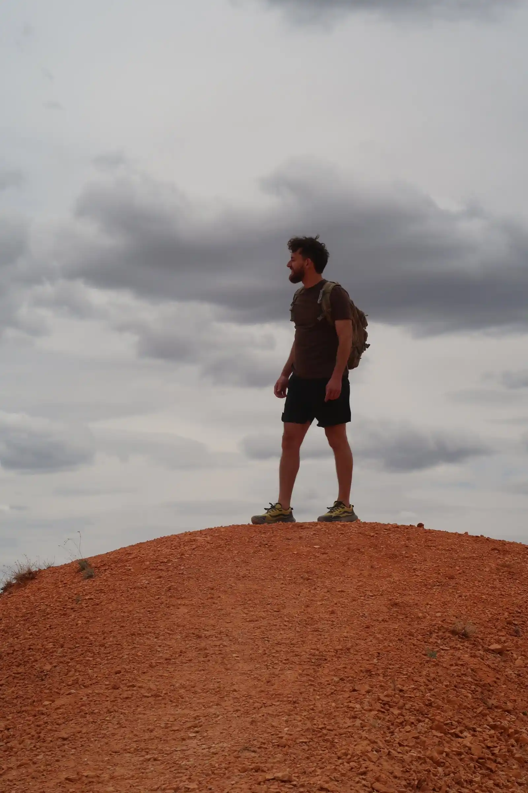

Paulo Bistrattin | WDD 130

Hello! My name is Paulo Bistrattin Machado and I am from Rio de Janeiro, Brazil. I love nature and being around it is what makes me the happiest in life. I enjoy going on hikes and rappeling with my wife and friends.